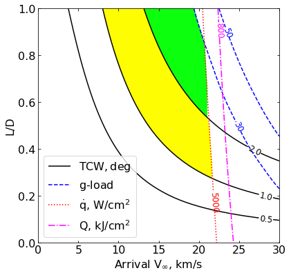
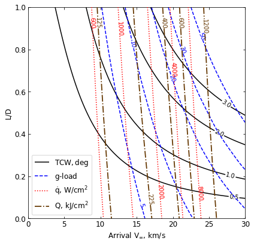

10 - a - Neptune - Feasibility Charts - Lift¶
[1]:
from AMAT.planet import Planet
from AMAT.vehicle import Vehicle
import numpy as np
from scipy import interpolate
import matplotlib.pyplot as plt
from matplotlib import rcParams
from matplotlib.patches import Polygon
import os
[2]:
# Create a planet object for Titan
planet=Planet("NEPTUNE")
planet.h_skip = 1000e3
planet.h_trap = 50e3
# Load an nominal atmospheric profile with height, temp, pressure, density data
planet.loadAtmosphereModel('../atmdata/Neptune/neptune-gram-avg.dat', 0 , 7 , 6, 5, heightInKmFlag=True)
[3]:
os.makedirs('../data/jsr-paper/neptune/')
[9]:
vinf_kms_array = np.linspace( 0.0, 30.0, 11)
LD_array = np.linspace( 0.0, 1.0 , 11)
[10]:
runID = 'neptune-lift-'
num_total = len(vinf_kms_array)*len(LD_array)
count = 1
v0_kms_array = np.zeros(len(vinf_kms_array))
v0_kms_array[:] = np.sqrt(1.0*(vinf_kms_array[:]*1E3)**2.0 +\
2*np.ones(len(vinf_kms_array))*\
planet.GM/(planet.RP+1000.0*1.0E3))/1.0E3
overShootLimit_array = np.zeros((len(v0_kms_array),len(LD_array)))
underShootLimit_array = np.zeros((len(v0_kms_array),len(LD_array)))
exitflag_os_array = np.zeros((len(v0_kms_array),len(LD_array)))
exitflag_us_array = np.zeros((len(v0_kms_array),len(LD_array)))
TCW_array = np.zeros((len(v0_kms_array),len(LD_array)))
[11]:
for i in range(0,len(v0_kms_array)):
for j in range(0,len(LD_array)):
vehicle=Vehicle('Apollo', 1000.0, 200.0, LD_array[j], 3.1416, 0.0, 1.00, planet)
vehicle.setInitialState(1000.0,0.0,0.0,v0_kms_array[i],0.0,-4.5,0.0,0.0)
vehicle.setSolverParams(1E-6)
overShootLimit_array[i,j], exitflag_os_array[i,j] = vehicle.findOverShootLimit (2400.0, 1.0, -80.0, -4.0, 1E-10, 400000.0)
underShootLimit_array[i,j], exitflag_us_array[i,j] = vehicle.findUnderShootLimit(2400.0, 1.0, -80.0, -4.0, 1E-10, 400000.0)
TCW_array[i,j] = overShootLimit_array[i,j] - underShootLimit_array[i,j]
print("Run #"+str(count)+" of "+ str(num_total)+": Arrival V_infty: "+str(vinf_kms_array[i])+" km/s"+", L/D:"+str(LD_array[j]) + " OSL: "+str(overShootLimit_array[i,j])+" USL: "+str(underShootLimit_array[i,j])+", TCW: "+str(TCW_array[i,j])+" EFOS: "+str(exitflag_os_array[i,j])+ " EFUS: "+str(exitflag_us_array[i,j]))
count = count +1
np.savetxt('../data/jsr-paper/neptune/'+runID+'vinf_kms_array.txt',vinf_kms_array)
np.savetxt('../data/jsr-paper/neptune/'+runID+'v0_kms_array.txt',v0_kms_array)
np.savetxt('../data/jsr-paper/neptune/'+runID+'LD_array.txt',LD_array)
np.savetxt('../data/jsr-paper/neptune/'+runID+'overShootLimit_array.txt',overShootLimit_array)
np.savetxt('../data/jsr-paper/neptune/'+runID+'exitflag_os_array.txt',exitflag_os_array)
np.savetxt('../data/jsr-paper/neptune/'+runID+'undershootLimit_array.txt',underShootLimit_array)
np.savetxt('../data/jsr-paper/neptune/'+runID+'exitflag_us_array.txt',exitflag_us_array)
np.savetxt('../data/jsr-paper/neptune/'+runID+'TCW_array.txt',TCW_array)
Run #1 of 121: Arrival V_infty: 0.0 km/s, L/D:0.0 OSL: -11.435151895770105 USL: -11.435151895770105, TCW: 0.0 EFOS: 1.0 EFUS: 1.0
Run #2 of 121: Arrival V_infty: 0.0 km/s, L/D:0.1 OSL: -11.41758580975511 USL: -11.452880255172204, TCW: 0.03529444541709381 EFOS: 1.0 EFUS: 1.0
Run #3 of 121: Arrival V_infty: 0.0 km/s, L/D:0.2 OSL: -11.40039278592667 USL: -11.470702202659595, TCW: 0.07030941673292546 EFOS: 1.0 EFUS: 1.0
Run #4 of 121: Arrival V_infty: 0.0 km/s, L/D:0.30000000000000004 OSL: -11.383534649601643 USL: -11.489026151484723, TCW: 0.10549150188307976 EFOS: 1.0 EFUS: 1.0
Run #5 of 121: Arrival V_infty: 0.0 km/s, L/D:0.4 OSL: -11.366855007843697 USL: -11.507639696577826, TCW: 0.1407846887341293 EFOS: 1.0 EFUS: 1.0
Run #6 of 121: Arrival V_infty: 0.0 km/s, L/D:0.5 OSL: -11.350467051139276 USL: -11.526223460907204, TCW: 0.17575640976792783 EFOS: 1.0 EFUS: 1.0
Run #7 of 121: Arrival V_infty: 0.0 km/s, L/D:0.6000000000000001 OSL: -11.334307391873153 USL: -11.54537606494705, TCW: 0.2110686730738962 EFOS: 1.0 EFUS: 1.0
Run #8 of 121: Arrival V_infty: 0.0 km/s, L/D:0.7000000000000001 OSL: -11.3184584865121 USL: -11.564715931835963, TCW: 0.24625744532386307 EFOS: 1.0 EFUS: 1.0
Run #9 of 121: Arrival V_infty: 0.0 km/s, L/D:0.8 OSL: -11.302770665162825 USL: -11.584278102629469, TCW: 0.28150743746664375 EFOS: 1.0 EFUS: 1.0
Run #10 of 121: Arrival V_infty: 0.0 km/s, L/D:0.9 OSL: -11.287352589257353 USL: -11.604203222635988, TCW: 0.3168506333786354 EFOS: 1.0 EFUS: 1.0
Run #11 of 121: Arrival V_infty: 0.0 km/s, L/D:1.0 OSL: -11.272222491137654 USL: -11.624380490073236, TCW: 0.3521579989355814 EFOS: 1.0 EFUS: 1.0
Run #12 of 121: Arrival V_infty: 3.0 km/s, L/D:0.0 OSL: -11.583740248472168 USL: -11.583740248472168, TCW: 0.0 EFOS: 1.0 EFUS: 1.0
Run #13 of 121: Arrival V_infty: 3.0 km/s, L/D:0.1 OSL: -11.561690079721302 USL: -11.606115828639304, TCW: 0.04442574891800177 EFOS: 1.0 EFUS: 1.0
Run #14 of 121: Arrival V_infty: 3.0 km/s, L/D:0.2 OSL: -11.540143274763977 USL: -11.629042991964525, TCW: 0.08889971720054746 EFOS: 1.0 EFUS: 1.0
Run #15 of 121: Arrival V_infty: 3.0 km/s, L/D:0.30000000000000004 OSL: -11.518995312966581 USL: -11.652457052867248, TCW: 0.13346173990066745 EFOS: 1.0 EFUS: 1.0
Run #16 of 121: Arrival V_infty: 3.0 km/s, L/D:0.4 OSL: -11.49823720983477 USL: -11.676243349953438, TCW: 0.17800614011866855 EFOS: 1.0 EFUS: 1.0
Run #17 of 121: Arrival V_infty: 3.0 km/s, L/D:0.5 OSL: -11.477965351496096 USL: -11.70053311776428, TCW: 0.22256776626818464 EFOS: 1.0 EFUS: 1.0
Run #18 of 121: Arrival V_infty: 3.0 km/s, L/D:0.6000000000000001 OSL: -11.45812318915705 USL: -11.725269882641442, TCW: 0.267146693484392 EFOS: 1.0 EFUS: 1.0
Run #19 of 121: Arrival V_infty: 3.0 km/s, L/D:0.7000000000000001 OSL: -11.438566951554094 USL: -11.750554719506908, TCW: 0.31198776795281447 EFOS: 1.0 EFUS: 1.0
Run #20 of 121: Arrival V_infty: 3.0 km/s, L/D:0.8 OSL: -11.419434857551096 USL: -11.776327519390179, TCW: 0.3568926618390833 EFOS: 1.0 EFUS: 1.0
Run #21 of 121: Arrival V_infty: 3.0 km/s, L/D:0.9 OSL: -11.400713170060044 USL: -11.80249176842699, TCW: 0.4017785983669455 EFOS: 1.0 EFUS: 1.0
Run #22 of 121: Arrival V_infty: 3.0 km/s, L/D:1.0 OSL: -11.382248386671563 USL: -11.829119409550913, TCW: 0.44687102287934977 EFOS: 1.0 EFUS: 1.0
Run #23 of 121: Arrival V_infty: 6.0 km/s, L/D:0.0 OSL: -11.915582234676549 USL: -11.915582234676549, TCW: 0.0 EFOS: 1.0 EFUS: 1.0
Run #24 of 121: Arrival V_infty: 6.0 km/s, L/D:0.1 OSL: -11.880471554970427 USL: -11.951826253105537, TCW: 0.07135469813511008 EFOS: 1.0 EFUS: 1.0
Run #25 of 121: Arrival V_infty: 6.0 km/s, L/D:0.2 OSL: -11.846469245330809 USL: -11.989329841846484, TCW: 0.14286059651567484 EFOS: 1.0 EFUS: 1.0
Run #26 of 121: Arrival V_infty: 6.0 km/s, L/D:0.30000000000000004 OSL: -11.813651788183051 USL: -12.02798110236472, TCW: 0.21432931418166845 EFOS: 1.0 EFUS: 1.0
Run #27 of 121: Arrival V_infty: 6.0 km/s, L/D:0.4 OSL: -11.781860204682744 USL: -12.067863660595322, TCW: 0.2860034559125779 EFOS: 1.0 EFUS: 1.0
Run #28 of 121: Arrival V_infty: 6.0 km/s, L/D:0.5 OSL: -11.751056764114765 USL: -12.109039229337213, TCW: 0.3579824652224488 EFOS: 1.0 EFUS: 1.0
Run #29 of 121: Arrival V_infty: 6.0 km/s, L/D:0.6000000000000001 OSL: -11.721318761014118 USL: -12.15147394329324, TCW: 0.4301551822791225 EFOS: 1.0 EFUS: 1.0
Run #30 of 121: Arrival V_infty: 6.0 km/s, L/D:0.7000000000000001 OSL: -11.692590411625133 USL: -12.195184744097787, TCW: 0.5025943324726541 EFOS: 1.0 EFUS: 1.0
Run #31 of 121: Arrival V_infty: 6.0 km/s, L/D:0.8 OSL: -11.664717608447972 USL: -12.240309220640484, TCW: 0.5755916121925111 EFOS: 1.0 EFUS: 1.0
Run #32 of 121: Arrival V_infty: 6.0 km/s, L/D:0.9 OSL: -11.637809984556952 USL: -12.286684883736598, TCW: 0.6488748991796456 EFOS: 1.0 EFUS: 1.0
Run #33 of 121: Arrival V_infty: 6.0 km/s, L/D:1.0 OSL: -11.611912830496294 USL: -12.33447021151369, TCW: 0.7225573810173955 EFOS: 1.0 EFUS: 1.0
Run #34 of 121: Arrival V_infty: 9.0 km/s, L/D:0.0 OSL: -12.297795911763387 USL: -12.297795911763387, TCW: 0.0 EFOS: 1.0 EFUS: 1.0
Run #35 of 121: Arrival V_infty: 9.0 km/s, L/D:0.1 OSL: -12.243157008815615 USL: -12.35524667106074, TCW: 0.11208966224512551 EFOS: 1.0 EFUS: 1.0
Run #36 of 121: Arrival V_infty: 9.0 km/s, L/D:0.2 OSL: -12.191398358383594 USL: -12.415722050103795, TCW: 0.22432369172020117 EFOS: 1.0 EFUS: 1.0
Run #37 of 121: Arrival V_infty: 9.0 km/s, L/D:0.30000000000000004 OSL: -12.142308017129835 USL: -12.479407992625056, TCW: 0.33709997549522086 EFOS: 1.0 EFUS: 1.0
Run #38 of 121: Arrival V_infty: 9.0 km/s, L/D:0.4 OSL: -12.095714673188922 USL: -12.54620593157233, TCW: 0.4504912583834084 EFOS: 1.0 EFUS: 1.0
Run #39 of 121: Arrival V_infty: 9.0 km/s, L/D:0.5 OSL: -12.05162197942991 USL: -12.616443926825013, TCW: 0.564821947395103 EFOS: 1.0 EFUS: 1.0
Run #40 of 121: Arrival V_infty: 9.0 km/s, L/D:0.6000000000000001 OSL: -12.00978813502661 USL: -12.690090065425466, TCW: 0.6803019303988549 EFOS: 1.0 EFUS: 1.0
Run #41 of 121: Arrival V_infty: 9.0 km/s, L/D:0.7000000000000001 OSL: -11.970211854386434 USL: -12.76718862017151, TCW: 0.7969767657850753 EFOS: 1.0 EFUS: 1.0
Run #42 of 121: Arrival V_infty: 9.0 km/s, L/D:0.8 OSL: -11.93247399914253 USL: -12.847735437753727, TCW: 0.9152614386111964 EFOS: 1.0 EFUS: 1.0
Run #43 of 121: Arrival V_infty: 9.0 km/s, L/D:0.9 OSL: -11.896722691901232 USL: -12.932064942076977, TCW: 1.035342250175745 EFOS: 1.0 EFUS: 1.0
Run #44 of 121: Arrival V_infty: 9.0 km/s, L/D:1.0 OSL: -11.86284378608616 USL: -13.019989737371361, TCW: 1.1571459512852016 EFOS: 1.0 EFUS: 1.0
Run #45 of 121: Arrival V_infty: 12.0 km/s, L/D:0.0 OSL: -12.676635694355355 USL: -12.676635694355355, TCW: 0.0 EFOS: 1.0 EFUS: 1.0
Run #46 of 121: Arrival V_infty: 12.0 km/s, L/D:0.1 OSL: -12.598157953889313 USL: -12.761219353124034, TCW: 0.16306139923472074 EFOS: 1.0 EFUS: 1.0
Run #47 of 121: Arrival V_infty: 12.0 km/s, L/D:0.2 OSL: -12.5255582717582 USL: -12.852302080777008, TCW: 0.32674380901880795 EFOS: 1.0 EFUS: 1.0
Run #48 of 121: Arrival V_infty: 12.0 km/s, L/D:0.30000000000000004 OSL: -12.458500741191529 USL: -12.950232833965856, TCW: 0.4917320927743276 EFOS: 1.0 EFUS: 1.0
Run #49 of 121: Arrival V_infty: 12.0 km/s, L/D:0.4 OSL: -12.396498681860976 USL: -13.055360540241963, TCW: 0.6588618583809875 EFOS: 1.0 EFUS: 1.0
Run #50 of 121: Arrival V_infty: 12.0 km/s, L/D:0.5 OSL: -12.339219342811703 USL: -13.167848681929172, TCW: 0.8286293391174695 EFOS: 1.0 EFUS: 1.0
Run #51 of 121: Arrival V_infty: 12.0 km/s, L/D:0.6000000000000001 OSL: -12.286268966850912 USL: -13.288101963837107, TCW: 1.0018329969861952 EFOS: 1.0 EFUS: 1.0
Run #52 of 121: Arrival V_infty: 12.0 km/s, L/D:0.7000000000000001 OSL: -12.237407863227418 USL: -13.416174248832249, TCW: 1.1787663856048312 EFOS: 1.0 EFUS: 1.0
Run #53 of 121: Arrival V_infty: 12.0 km/s, L/D:0.8 OSL: -12.191870774433482 USL: -13.552260321022914, TCW: 1.3603895465894311 EFOS: 1.0 EFUS: 1.0
Run #54 of 121: Arrival V_infty: 12.0 km/s, L/D:0.9 OSL: -12.149672145777004 USL: -13.696438883434894, TCW: 1.5467667376578902 EFOS: 1.0 EFUS: 1.0
Run #55 of 121: Arrival V_infty: 12.0 km/s, L/D:1.0 OSL: -12.110386201489746 USL: -13.848560430338694, TCW: 1.7381742288489477 EFOS: 1.0 EFUS: 1.0
Run #56 of 121: Arrival V_infty: 15.0 km/s, L/D:0.0 OSL: -13.027635418537102 USL: -13.027635418537102, TCW: 0.0 EFOS: 1.0 EFUS: 1.0
Run #57 of 121: Arrival V_infty: 15.0 km/s, L/D:0.1 OSL: -12.92354238446569 USL: -13.143287237831828, TCW: 0.21974485336613725 EFOS: 1.0 EFUS: 1.0
Run #58 of 121: Arrival V_infty: 15.0 km/s, L/D:0.2 OSL: -12.830003196067992 USL: -13.271399828598078, TCW: 0.4413966325300862 EFOS: 1.0 EFUS: 1.0
Run #59 of 121: Arrival V_infty: 15.0 km/s, L/D:0.30000000000000004 OSL: -12.745898447945365 USL: -13.412803434395755, TCW: 0.6669049864503904 EFOS: 1.0 EFUS: 1.0
Run #60 of 121: Arrival V_infty: 15.0 km/s, L/D:0.4 OSL: -12.670097377951606 USL: -13.56828608836804, TCW: 0.8981887104164343 EFOS: 1.0 EFUS: 1.0
Run #61 of 121: Arrival V_infty: 15.0 km/s, L/D:0.5 OSL: -12.601757030995941 USL: -13.738381401712104, TCW: 1.136624370716163 EFOS: 1.0 EFUS: 1.0
Run #62 of 121: Arrival V_infty: 15.0 km/s, L/D:0.6000000000000001 OSL: -12.54017877788283 USL: -13.922572109313478, TCW: 1.3823933314306487 EFOS: 1.0 EFUS: 1.0
Run #63 of 121: Arrival V_infty: 15.0 km/s, L/D:0.7000000000000001 OSL: -12.48459930480385 USL: -14.12115509817886, TCW: 1.6365557933750097 EFOS: 1.0 EFUS: 1.0
Run #64 of 121: Arrival V_infty: 15.0 km/s, L/D:0.8 OSL: -12.433927119320288 USL: -14.334913161896111, TCW: 1.9009860425758234 EFOS: 1.0 EFUS: 1.0
Run #65 of 121: Arrival V_infty: 15.0 km/s, L/D:0.9 OSL: -12.387716067856672 USL: -14.563566540338797, TCW: 2.175850472482125 EFOS: 1.0 EFUS: 1.0
Run #66 of 121: Arrival V_infty: 15.0 km/s, L/D:1.0 OSL: -12.345300238819618 USL: -14.807081443828793, TCW: 2.4617812050091743 EFOS: 1.0 EFUS: 1.0
Run #67 of 121: Arrival V_infty: 18.0 km/s, L/D:0.0 OSL: -13.340785171207244 USL: -13.340785171207244, TCW: 0.0 EFOS: 1.0 EFUS: 1.0
Run #68 of 121: Arrival V_infty: 18.0 km/s, L/D:0.1 OSL: -13.209852153497195 USL: -13.49111511285082, TCW: 0.2812629593536258 EFOS: 1.0 EFUS: 1.0
Run #69 of 121: Arrival V_infty: 18.0 km/s, L/D:0.2 OSL: -13.09582885348209 USL: -13.661685494163976, TCW: 0.5658566406818863 EFOS: 1.0 EFUS: 1.0
Run #70 of 121: Arrival V_infty: 18.0 km/s, L/D:0.30000000000000004 OSL: -12.996503304773796 USL: -13.853843476070324, TCW: 0.8573401712965278 EFOS: 1.0 EFUS: 1.0
Run #71 of 121: Arrival V_infty: 18.0 km/s, L/D:0.4 OSL: -12.909816961000615 USL: -14.06963862424891, TCW: 1.1598216632482945 EFOS: 1.0 EFUS: 1.0
Run #72 of 121: Arrival V_infty: 18.0 km/s, L/D:0.5 OSL: -12.833618825239682 USL: -14.309904437333898, TCW: 1.476285612094216 EFOS: 1.0 EFUS: 1.0
Run #73 of 121: Arrival V_infty: 18.0 km/s, L/D:0.6000000000000001 OSL: -12.76610979799807 USL: -14.57536840548346, TCW: 1.8092586074853898 EFOS: 1.0 EFUS: 1.0
Run #74 of 121: Arrival V_infty: 18.0 km/s, L/D:0.7000000000000001 OSL: -12.70610245781063 USL: -14.865826298086176, TCW: 2.1597238402755465 EFOS: 1.0 EFUS: 1.0
Run #75 of 121: Arrival V_infty: 18.0 km/s, L/D:0.8 OSL: -12.652547959711228 USL: -15.181487885573006, TCW: 2.5289399258617777 EFOS: 1.0 EFUS: 1.0
Run #76 of 121: Arrival V_infty: 18.0 km/s, L/D:0.9 OSL: -12.60410105025585 USL: -15.521178699866141, TCW: 2.9170776496102917 EFOS: 1.0 EFUS: 1.0
Run #77 of 121: Arrival V_infty: 18.0 km/s, L/D:1.0 OSL: -12.560057243645133 USL: -15.884147746837698, TCW: 3.324090503192565 EFOS: 1.0 EFUS: 1.0
Run #78 of 121: Arrival V_infty: 21.0 km/s, L/D:0.0 OSL: -13.612588502099243 USL: -13.612588502099243, TCW: 0.0 EFOS: 1.0 EFUS: 1.0
Run #79 of 121: Arrival V_infty: 21.0 km/s, L/D:0.1 OSL: -13.455258285270247 USL: -13.797131134157098, TCW: 0.341872848886851 EFOS: 1.0 EFUS: 1.0
Run #80 of 121: Arrival V_infty: 21.0 km/s, L/D:0.2 OSL: -13.322136040933401 USL: -14.01354039337457, TCW: 0.6914043524411682 EFOS: 1.0 EFUS: 1.0
Run #81 of 121: Arrival V_infty: 21.0 km/s, L/D:0.30000000000000004 OSL: -13.20984121949732 USL: -14.264888133671775, TCW: 1.0550469141744543 EFOS: 1.0 EFUS: 1.0
Run #82 of 121: Arrival V_infty: 21.0 km/s, L/D:0.4 OSL: -13.114526535387995 USL: -14.553501990900259, TCW: 1.4389754555122636 EFOS: 1.0 EFUS: 1.0
Run #83 of 121: Arrival V_infty: 21.0 km/s, L/D:0.5 OSL: -13.032716305162467 USL: -14.88013559479441, TCW: 1.8474192896319437 EFOS: 1.0 EFUS: 1.0
Run #84 of 121: Arrival V_infty: 21.0 km/s, L/D:0.6000000000000001 OSL: -12.961684974656237 USL: -15.245240475967876, TCW: 2.283555501311639 EFOS: 1.0 EFUS: 1.0
Run #85 of 121: Arrival V_infty: 21.0 km/s, L/D:0.7000000000000001 OSL: -12.899161425015336 USL: -15.648020731576253, TCW: 2.7488593065609166 EFOS: 1.0 EFUS: 1.0
Run #86 of 121: Arrival V_infty: 21.0 km/s, L/D:0.8 OSL: -12.843844909708423 USL: -16.086056021609693, TCW: 3.2422111119012698 EFOS: 1.0 EFUS: 1.0
Run #87 of 121: Arrival V_infty: 21.0 km/s, L/D:0.9 OSL: -12.794013310864102 USL: -16.55660003745288, TCW: 3.762586726588779 EFOS: 1.0 EFUS: 1.0
Run #88 of 121: Arrival V_infty: 21.0 km/s, L/D:1.0 OSL: -12.749012655986007 USL: -17.05963997163417, TCW: 4.310627315648162 EFOS: 1.0 EFUS: 1.0
Run #89 of 121: Arrival V_infty: 24.0 km/s, L/D:0.0 OSL: -13.842044990349677 USL: -13.842044990349677, TCW: 0.0 EFOS: 1.0 EFUS: 1.0
Run #90 of 121: Arrival V_infty: 24.0 km/s, L/D:0.1 OSL: -13.660688850450242 USL: -14.063170481473207, TCW: 0.4024816310229653 EFOS: 1.0 EFUS: 1.0
Run #91 of 121: Arrival V_infty: 24.0 km/s, L/D:0.2 OSL: -13.511397249985748 USL: -14.330554556217976, TCW: 0.8191573062322277 EFOS: 1.0 EFUS: 1.0
Run #92 of 121: Arrival V_infty: 24.0 km/s, L/D:0.30000000000000004 OSL: -13.388332059126697 USL: -14.64895725741735, TCW: 1.2606251982906542 EFOS: 1.0 EFUS: 1.0
Run #93 of 121: Arrival V_infty: 24.0 km/s, L/D:0.4 OSL: -13.28650095163539 USL: -15.02103599833572, TCW: 1.73453504670033 EFOS: 1.0 EFUS: 1.0
Run #94 of 121: Arrival V_infty: 24.0 km/s, L/D:0.5 OSL: -13.200815481057361 USL: -15.446956083687837, TCW: 2.2461406026304758 EFOS: 1.0 EFUS: 1.0
Run #95 of 121: Arrival V_infty: 24.0 km/s, L/D:0.6000000000000001 OSL: -13.127375179246883 USL: -15.923346782466979, TCW: 2.795971603220096 EFOS: 1.0 EFUS: 1.0
Run #96 of 121: Arrival V_infty: 24.0 km/s, L/D:0.7000000000000001 OSL: -13.063287791275798 USL: -16.450286682473234, TCW: 3.386998891197436 EFOS: 1.0 EFUS: 1.0
Run #97 of 121: Arrival V_infty: 24.0 km/s, L/D:0.8 OSL: -13.006804086395277 USL: -17.02532699241783, TCW: 4.018522906022554 EFOS: 1.0 EFUS: 1.0
Run #98 of 121: Arrival V_infty: 24.0 km/s, L/D:0.9 OSL: -12.956187751507969 USL: -17.645112334652367, TCW: 4.688924583144399 EFOS: 1.0 EFUS: 1.0
Run #99 of 121: Arrival V_infty: 24.0 km/s, L/D:1.0 OSL: -12.91045819127612 USL: -18.306307808248675, TCW: 5.395849616972555 EFOS: 1.0 EFUS: 1.0
Run #100 of 121: Arrival V_infty: 27.0 km/s, L/D:0.0 OSL: -14.03512689389754 USL: -14.03512689389754, TCW: 0.0 EFOS: 1.0 EFUS: 1.0
Run #101 of 121: Arrival V_infty: 27.0 km/s, L/D:0.1 OSL: -13.829980885398982 USL: -14.293864091276191, TCW: 0.46388320587720955 EFOS: 1.0 EFUS: 1.0
Run #102 of 121: Arrival V_infty: 27.0 km/s, L/D:0.2 OSL: -13.667218842747388 USL: -14.615816427180107, TCW: 0.9485975844327186 EFOS: 1.0 EFUS: 1.0
Run #103 of 121: Arrival V_infty: 27.0 km/s, L/D:0.30000000000000004 OSL: -13.535784719653748 USL: -15.007816391374945, TCW: 1.4720316717211972 EFOS: 1.0 EFUS: 1.0
Run #104 of 121: Arrival V_infty: 27.0 km/s, L/D:0.4 OSL: -13.429135452373885 USL: -15.468544454779476, TCW: 2.0394090024055913 EFOS: 1.0 EFUS: 1.0
Run #105 of 121: Arrival V_infty: 27.0 km/s, L/D:0.5 OSL: -13.340746507765289 USL: -16.0003409244091, TCW: 2.659594416643813 EFOS: 1.0 EFUS: 1.0
Run #106 of 121: Arrival V_infty: 27.0 km/s, L/D:0.6000000000000001 OSL: -13.26567645727846 USL: -16.6015295376601, TCW: 3.3358530803816393 EFOS: 1.0 EFUS: 1.0
Run #107 of 121: Arrival V_infty: 27.0 km/s, L/D:0.7000000000000001 OSL: -13.200512942945352 USL: -17.268133343823138, TCW: 4.067620400877786 EFOS: 1.0 EFUS: 1.0
Run #108 of 121: Arrival V_infty: 27.0 km/s, L/D:0.8 OSL: -13.143094837727404 USL: -17.995172108931, TCW: 4.852077271203598 EFOS: 1.0 EFUS: 1.0
Run #109 of 121: Arrival V_infty: 27.0 km/s, L/D:0.9 OSL: -13.092048304395576 USL: -18.77685321253739, TCW: 5.684804908141814 EFOS: 1.0 EFUS: 1.0
Run #110 of 121: Arrival V_infty: 27.0 km/s, L/D:1.0 OSL: -13.045718595341896 USL: -19.608076966527733, TCW: 6.562358371185837 EFOS: 1.0 EFUS: 1.0
Run #111 of 121: Arrival V_infty: 30.0 km/s, L/D:0.0 OSL: -14.196883029504534 USL: -14.196883029504534, TCW: 0.0 EFOS: 1.0 EFUS: 1.0
Run #112 of 121: Arrival V_infty: 30.0 km/s, L/D:0.1 OSL: -13.969076040597429 USL: -14.493690488441644, TCW: 0.5246144478442147 EFOS: 1.0 EFUS: 1.0
Run #113 of 121: Arrival V_infty: 30.0 km/s, L/D:0.2 OSL: -13.794088742695749 USL: -14.87319548989035, TCW: 1.0791067471946008 EFOS: 1.0 EFUS: 1.0
Run #114 of 121: Arrival V_infty: 30.0 km/s, L/D:0.30000000000000004 OSL: -13.656709264618257 USL: -15.338537567215099, TCW: 1.6818283025968412 EFOS: 1.0 EFUS: 1.0
Run #115 of 121: Arrival V_infty: 30.0 km/s, L/D:0.4 OSL: -13.5464152314089 USL: -15.896243807394058, TCW: 2.349828575985157 EFOS: 1.0 EFUS: 1.0
Run #116 of 121: Arrival V_infty: 30.0 km/s, L/D:0.5 OSL: -13.45608961196558 USL: -16.545714041629253, TCW: 3.0896244296636723 EFOS: 1.0 EFUS: 1.0
Run #117 of 121: Arrival V_infty: 30.0 km/s, L/D:0.6000000000000001 OSL: -13.379855483759457 USL: -17.28186355057187, TCW: 3.9020080668124137 EFOS: 1.0 EFUS: 1.0
Run #118 of 121: Arrival V_infty: 30.0 km/s, L/D:0.7000000000000001 OSL: -13.313954329660191 USL: -18.09793901066587, TCW: 4.783984681005677 EFOS: 1.0 EFUS: 1.0
Run #119 of 121: Arrival V_infty: 30.0 km/s, L/D:0.8 OSL: -13.255874470098206 USL: -18.98566452389059, TCW: 5.729790053792385 EFOS: 1.0 EFUS: 1.0
Run #120 of 121: Arrival V_infty: 30.0 km/s, L/D:0.9 OSL: -13.20426223172035 USL: -19.936720690271613, TCW: 6.732458458551264 EFOS: 1.0 EFUS: 1.0
Run #121 of 121: Arrival V_infty: 30.0 km/s, L/D:1.0 OSL: -13.157532973913476 USL: -20.942349761608057, TCW: 7.784816787694581 EFOS: 1.0 EFUS: 1.0
[13]:
acc_net_g_max_array = np.zeros((len(v0_kms_array),len(LD_array)))
stag_pres_atm_max_array = np.zeros((len(v0_kms_array),len(LD_array)))
q_stag_total_max_array = np.zeros((len(v0_kms_array),len(LD_array)))
heatload_max_array = np.zeros((len(v0_kms_array),len(LD_array)))
for i in range(0,len(v0_kms_array)):
for j in range(0,len(LD_array)):
vehicle=Vehicle('Apollo', 1000.0, 200.0, LD_array[j], 3.1416, 0.0, 1.00, planet)
vehicle.setInitialState(1000.0,0.0,0.0,v0_kms_array[i],0.0,overShootLimit_array[i,j],0.0,0.0)
vehicle.setSolverParams(1E-6)
vehicle.propogateEntry (2400.0, 1.0, 180.0)
# Extract and save variables to plot
t_min_os = vehicle.t_minc
h_km_os = vehicle.h_kmc
acc_net_g_os = vehicle.acc_net_g
q_stag_con_os = vehicle.q_stag_con
q_stag_rad_os = vehicle.q_stag_rad
rc_os = vehicle.rc
vc_os = vehicle.vc
stag_pres_atm_os = vehicle.computeStagPres(rc_os,vc_os)/(1.01325E5)
heatload_os = vehicle.heatload
vehicle=Vehicle('Apollo', 1000.0, 200.0, LD_array[j], 3.1416, 0.0, 1.00, planet)
vehicle.setInitialState(1000.0,0.0,0.0,v0_kms_array[i],0.0,underShootLimit_array[i,j],0.0,0.0)
vehicle.setSolverParams(1E-6)
vehicle.propogateEntry (2400.0, 1.0, 0.0)
# Extract and save variable to plot
t_min_us = vehicle.t_minc
h_km_us = vehicle.h_kmc
acc_net_g_us = vehicle.acc_net_g
q_stag_con_us = vehicle.q_stag_con
q_stag_rad_us = vehicle.q_stag_rad
rc_us = vehicle.rc
vc_us = vehicle.vc
stag_pres_atm_us = vehicle.computeStagPres(rc_us,vc_us)/(1.01325E5)
heatload_us = vehicle.heatload
q_stag_total_os = q_stag_con_os + q_stag_rad_os
q_stag_total_us = q_stag_con_us + q_stag_rad_us
acc_net_g_max_array[i,j] = max(max(acc_net_g_os),max(acc_net_g_us))
stag_pres_atm_max_array[i,j] = max(max(stag_pres_atm_os),max(stag_pres_atm_os))
q_stag_total_max_array[i,j] = max(max(q_stag_total_os),max(q_stag_total_us))
heatload_max_array[i,j] = max(max(heatload_os),max(heatload_os))
print("V_infty: "+str(vinf_kms_array[i])+" km/s"+", L/D: "+str(LD_array[j])+" G_MAX: "+str(acc_net_g_max_array[i,j])+" QDOT_MAX: "+str(q_stag_total_max_array[i,j])+" J_MAX: "+str(heatload_max_array[i,j])+" STAG. PRES: "+str(stag_pres_atm_max_array[i,j]))
np.savetxt('../data/jsr-paper/neptune/'+runID+'acc_net_g_max_array.txt',acc_net_g_max_array)
np.savetxt('../data/jsr-paper/neptune/'+runID+'stag_pres_atm_max_array.txt',stag_pres_atm_max_array)
np.savetxt('../data/jsr-paper/neptune/'+runID+'q_stag_total_max_array.txt',q_stag_total_max_array)
np.savetxt('../data/jsr-paper/neptune/'+runID+'heatload_max_array.txt',heatload_max_array)
V_infty: 0.0 km/s, L/D: 0.0 G_MAX: 0.47871559417992887 QDOT_MAX: 246.8325066595104 J_MAX: 52072.9323702999 STAG. PRES: 0.00928472517456087
V_infty: 0.0 km/s, L/D: 0.1 G_MAX: 0.4871895196029437 QDOT_MAX: 248.24601463676103 J_MAX: 52329.109988743236 STAG. PRES: 0.009166705828225478
V_infty: 0.0 km/s, L/D: 0.2 G_MAX: 0.5004171098215326 QDOT_MAX: 249.63898031754633 J_MAX: 52594.59946903137 STAG. PRES: 0.00905238663517709
V_infty: 0.0 km/s, L/D: 0.30000000000000004 G_MAX: 0.5188969606485972 QDOT_MAX: 251.08909158349442 J_MAX: 52863.38553341251 STAG. PRES: 0.00894051221680685
V_infty: 0.0 km/s, L/D: 0.4 G_MAX: 0.5421983293519989 QDOT_MAX: 252.56443852243828 J_MAX: 53127.53490765327 STAG. PRES: 0.008828197096459878
V_infty: 0.0 km/s, L/D: 0.5 G_MAX: 0.5697442643816761 QDOT_MAX: 253.96988510635694 J_MAX: 53399.089179168026 STAG. PRES: 0.008717643336415684
V_infty: 0.0 km/s, L/D: 0.6000000000000001 G_MAX: 0.6019838367390808 QDOT_MAX: 255.46637627815892 J_MAX: 53666.16464963904 STAG. PRES: 0.008607320006729504
V_infty: 0.0 km/s, L/D: 0.7000000000000001 G_MAX: 0.6381625035273355 QDOT_MAX: 256.95095025873553 J_MAX: 53938.576146710955 STAG. PRES: 0.008499532998534017
V_infty: 0.0 km/s, L/D: 0.8 G_MAX: 0.6780657019116583 QDOT_MAX: 258.4447257851316 J_MAX: 54210.09875694123 STAG. PRES: 0.00839195221810565
V_infty: 0.0 km/s, L/D: 0.9 G_MAX: 0.7213374353837376 QDOT_MAX: 259.93017211627904 J_MAX: 54480.3787276924 STAG. PRES: 0.008285388977763488
V_infty: 0.0 km/s, L/D: 1.0 G_MAX: 0.7682100996825573 QDOT_MAX: 261.4874643592906 J_MAX: 54759.697530381294 STAG. PRES: 0.008182462821872143
V_infty: 3.0 km/s, L/D: 0.0 G_MAX: 0.6245574557899737 QDOT_MAX: 282.14304151080853 J_MAX: 58813.10372680668 STAG. PRES: 0.012113023337180517
V_infty: 3.0 km/s, L/D: 0.1 G_MAX: 0.637604589963351 QDOT_MAX: 284.17409679146874 J_MAX: 59195.802152155804 STAG. PRES: 0.011920835359139799
V_infty: 3.0 km/s, L/D: 0.2 G_MAX: 0.6574069080513625 QDOT_MAX: 286.24802897035033 J_MAX: 59584.62878306936 STAG. PRES: 0.011733011390986718
V_infty: 3.0 km/s, L/D: 0.30000000000000004 G_MAX: 0.6838940306655849 QDOT_MAX: 288.34584308846223 J_MAX: 59973.116293241896 STAG. PRES: 0.011546342634051765
V_infty: 3.0 km/s, L/D: 0.4 G_MAX: 0.7167648473986982 QDOT_MAX: 290.43506810804655 J_MAX: 60364.069595909605 STAG. PRES: 0.011360614690972186
V_infty: 3.0 km/s, L/D: 0.5 G_MAX: 0.755964719701413 QDOT_MAX: 292.5463443137264 J_MAX: 60759.597829058046 STAG. PRES: 0.011179376067981743
V_infty: 3.0 km/s, L/D: 0.6000000000000001 G_MAX: 0.8010881971393146 QDOT_MAX: 294.66640983811806 J_MAX: 61154.577114205065 STAG. PRES: 0.01099671495289936
V_infty: 3.0 km/s, L/D: 0.7000000000000001 G_MAX: 0.8519279134636645 QDOT_MAX: 296.8132060022469 J_MAX: 61551.98367843734 STAG. PRES: 0.010814607334096778
V_infty: 3.0 km/s, L/D: 0.8 G_MAX: 0.9081530734052529 QDOT_MAX: 298.9864704597454 J_MAX: 61946.863116432614 STAG. PRES: 0.010633851350641136
V_infty: 3.0 km/s, L/D: 0.9 G_MAX: 0.9689663889547996 QDOT_MAX: 301.1099765572125 J_MAX: 62355.40465127094 STAG. PRES: 0.010458967505444462
V_infty: 3.0 km/s, L/D: 1.0 G_MAX: 1.0345524299862494 QDOT_MAX: 303.26394265410596 J_MAX: 62749.106118955744 STAG. PRES: 0.010281988695609425
V_infty: 6.0 km/s, L/D: 0.0 G_MAX: 1.0620884986308312 QDOT_MAX: 373.8037469962948 J_MAX: 75787.82198343273 STAG. PRES: 0.02059739107960851
V_infty: 6.0 km/s, L/D: 0.1 G_MAX: 1.0958561692299345 QDOT_MAX: 378.3048191488036 J_MAX: 76601.57579148708 STAG. PRES: 0.020059519217791467
V_infty: 6.0 km/s, L/D: 0.2 G_MAX: 1.1417511559877425 QDOT_MAX: 382.86995736840834 J_MAX: 77420.08767032408 STAG. PRES: 0.019534069569764778
V_infty: 6.0 km/s, L/D: 0.30000000000000004 G_MAX: 1.1998236510740257 QDOT_MAX: 387.4569775536947 J_MAX: 78253.1011435564 STAG. PRES: 0.019025144619702252
V_infty: 6.0 km/s, L/D: 0.4 G_MAX: 1.2703152775409716 QDOT_MAX: 392.07219104265096 J_MAX: 79085.86532565 STAG. PRES: 0.018524319557613134
V_infty: 6.0 km/s, L/D: 0.5 G_MAX: 1.3531423894713026 QDOT_MAX: 396.718035834868 J_MAX: 79921.58408491754 STAG. PRES: 0.018034765735226176
V_infty: 6.0 km/s, L/D: 0.6000000000000001 G_MAX: 1.4478925747055083 QDOT_MAX: 401.3684191941307 J_MAX: 80774.1674643795 STAG. PRES: 0.017562078974601873
V_infty: 6.0 km/s, L/D: 0.7000000000000001 G_MAX: 1.554300531973695 QDOT_MAX: 406.0140538835244 J_MAX: 81626.61459429305 STAG. PRES: 0.017099845655690393
V_infty: 6.0 km/s, L/D: 0.8 G_MAX: 1.672848562690645 QDOT_MAX: 410.7573596937624 J_MAX: 82479.93615682157 STAG. PRES: 0.016649021169742824
V_infty: 6.0 km/s, L/D: 0.9 G_MAX: 1.8022673292699531 QDOT_MAX: 415.4775986208275 J_MAX: 83337.19076588505 STAG. PRES: 0.016210801410488494
V_infty: 6.0 km/s, L/D: 1.0 G_MAX: 1.9431642889866498 QDOT_MAX: 420.2645482735575 J_MAX: 84209.66249157111 STAG. PRES: 0.01578741193339843
V_infty: 9.0 km/s, L/D: 0.0 G_MAX: 1.8128728790395785 QDOT_MAX: 513.4121320029931 J_MAX: 99433.2746423425 STAG. PRES: 0.035154303828134545
V_infty: 9.0 km/s, L/D: 0.1 G_MAX: 1.9010526736999616 QDOT_MAX: 523.2877458596511 J_MAX: 101143.80417401232 STAG. PRES: 0.033681628197202
V_infty: 9.0 km/s, L/D: 0.2 G_MAX: 2.01224789651522 QDOT_MAX: 533.3274054931317 J_MAX: 102885.02688159519 STAG. PRES: 0.032273101575213944
V_infty: 9.0 km/s, L/D: 0.30000000000000004 G_MAX: 2.148174048162481 QDOT_MAX: 543.5138504243904 J_MAX: 104645.51508676168 STAG. PRES: 0.030913859967534027
V_infty: 9.0 km/s, L/D: 0.4 G_MAX: 2.3097439900217465 QDOT_MAX: 553.7621518813072 J_MAX: 106428.14178864246 STAG. PRES: 0.02959749794727878
V_infty: 9.0 km/s, L/D: 0.5 G_MAX: 2.497881959665464 QDOT_MAX: 564.0934911005671 J_MAX: 108228.69095541674 STAG. PRES: 0.028330551369066464
V_infty: 9.0 km/s, L/D: 0.6000000000000001 G_MAX: 2.7136516107948805 QDOT_MAX: 574.5626973618512 J_MAX: 110042.14457471207 STAG. PRES: 0.027126923717495872
V_infty: 9.0 km/s, L/D: 0.7000000000000001 G_MAX: 2.9563646733858944 QDOT_MAX: 585.1283383311818 J_MAX: 111867.54834667564 STAG. PRES: 0.02599524177640001
V_infty: 9.0 km/s, L/D: 0.8 G_MAX: 3.2260547170085694 QDOT_MAX: 595.7001761590928 J_MAX: 113705.43258188816 STAG. PRES: 0.02492490469131047
V_infty: 9.0 km/s, L/D: 0.9 G_MAX: 3.5238989071582547 QDOT_MAX: 606.3090881663003 J_MAX: 115540.92181277375 STAG. PRES: 0.02390173417926408
V_infty: 9.0 km/s, L/D: 1.0 G_MAX: 3.8503521276943893 QDOT_MAX: 616.9523003158836 J_MAX: 117393.85067445015 STAG. PRES: 0.0229253224414261
V_infty: 12.0 km/s, L/D: 0.0 G_MAX: 2.8908316286180638 QDOT_MAX: 720.5333943051703 J_MAX: 130604.36231785928 STAG. PRES: 0.056051104983572596
V_infty: 12.0 km/s, L/D: 0.1 G_MAX: 3.096223426257536 QDOT_MAX: 740.2271074906057 J_MAX: 133918.10970073045 STAG. PRES: 0.052606723814010596
V_infty: 12.0 km/s, L/D: 0.2 G_MAX: 3.3484721657998837 QDOT_MAX: 760.5481989762153 J_MAX: 137296.3762419572 STAG. PRES: 0.04939376104806347
V_infty: 12.0 km/s, L/D: 0.30000000000000004 G_MAX: 3.650856287727598 QDOT_MAX: 781.6893572966582 J_MAX: 140725.42305256563 STAG. PRES: 0.04636131078773272
V_infty: 12.0 km/s, L/D: 0.4 G_MAX: 4.006349232576758 QDOT_MAX: 803.4271388347598 J_MAX: 144200.37139291532 STAG. PRES: 0.04352158500278056
V_infty: 12.0 km/s, L/D: 0.5 G_MAX: 4.418380088168293 QDOT_MAX: 825.5517951157982 J_MAX: 147713.67035237935 STAG. PRES: 0.04087387163274198
V_infty: 12.0 km/s, L/D: 0.6000000000000001 G_MAX: 4.890770876207847 QDOT_MAX: 847.9144247871607 J_MAX: 151256.7640648889 STAG. PRES: 0.0384078884466757
V_infty: 12.0 km/s, L/D: 0.7000000000000001 G_MAX: 5.422695261293328 QDOT_MAX: 870.2116887525549 J_MAX: 154821.41894122103 STAG. PRES: 0.03612234110967443
V_infty: 12.0 km/s, L/D: 0.8 G_MAX: 6.01902331146344 QDOT_MAX: 892.6787932647692 J_MAX: 158396.25244191734 STAG. PRES: 0.03400827768020122
V_infty: 12.0 km/s, L/D: 0.9 G_MAX: 6.68123477206884 QDOT_MAX: 915.2050539119596 J_MAX: 161970.2698447688 STAG. PRES: 0.03204259577244489
V_infty: 12.0 km/s, L/D: 1.0 G_MAX: 7.411377995719377 QDOT_MAX: 937.6770551196159 J_MAX: 165541.12910488964 STAG. PRES: 0.030210483754972626
V_infty: 15.0 km/s, L/D: 0.0 G_MAX: 4.346921747902556 QDOT_MAX: 1074.4209641387738 J_MAX: 175885.09160163265 STAG. PRES: 0.0842722141780341
V_infty: 15.0 km/s, L/D: 0.1 G_MAX: 4.766028210045917 QDOT_MAX: 1113.910955596647 J_MAX: 181947.38921017348 STAG. PRES: 0.07718278411257636
V_infty: 15.0 km/s, L/D: 0.2 G_MAX: 5.26759567967169 QDOT_MAX: 1155.0710064984823 J_MAX: 188146.40376133015 STAG. PRES: 0.07065970810487888
V_infty: 15.0 km/s, L/D: 0.30000000000000004 G_MAX: 5.8671462900497575 QDOT_MAX: 1197.4490942917055 J_MAX: 194441.98413274015 STAG. PRES: 0.06470103693882039
V_infty: 15.0 km/s, L/D: 0.4 G_MAX: 6.563358994794188 QDOT_MAX: 1240.642817517898 J_MAX: 200785.81417588636 STAG. PRES: 0.059336092830578654
V_infty: 15.0 km/s, L/D: 0.5 G_MAX: 7.373172736970291 QDOT_MAX: 1284.397269964909 J_MAX: 207175.8629321341 STAG. PRES: 0.05457114929282812
V_infty: 15.0 km/s, L/D: 0.6000000000000001 G_MAX: 8.353082551932902 QDOT_MAX: 1328.3858745943464 J_MAX: 213601.38825112395 STAG. PRES: 0.050289879460405584
V_infty: 15.0 km/s, L/D: 0.7000000000000001 G_MAX: 9.485177406404558 QDOT_MAX: 1372.765761241155 J_MAX: 220025.69249007825 STAG. PRES: 0.04644501237075259
V_infty: 15.0 km/s, L/D: 0.8 G_MAX: 10.741319214400628 QDOT_MAX: 1416.321183823561 J_MAX: 226419.17693117177 STAG. PRES: 0.04300596068551931
V_infty: 15.0 km/s, L/D: 0.9 G_MAX: 12.139099667336504 QDOT_MAX: 1459.9892434536619 J_MAX: 232775.1305361177 STAG. PRES: 0.0399357105324578
V_infty: 15.0 km/s, L/D: 1.0 G_MAX: 13.6865265357726 QDOT_MAX: 1508.5633648389878 J_MAX: 239076.54124960536 STAG. PRES: 0.03720389050512151
V_infty: 18.0 km/s, L/D: 0.0 G_MAX: 6.174761739486084 QDOT_MAX: 1818.0048214770013 J_MAX: 253411.23063450717 STAG. PRES: 0.11969175627714063
V_infty: 18.0 km/s, L/D: 0.1 G_MAX: 6.92499745473957 QDOT_MAX: 1898.3202101830739 J_MAX: 264306.44125130837 STAG. PRES: 0.10695452368292667
V_infty: 18.0 km/s, L/D: 0.2 G_MAX: 7.8799317805323685 QDOT_MAX: 1982.4490097750663 J_MAX: 275443.207879964 STAG. PRES: 0.09561146243762211
V_infty: 18.0 km/s, L/D: 0.30000000000000004 G_MAX: 9.046791095721932 QDOT_MAX: 2069.4256737839687 J_MAX: 286719.43682038516 STAG. PRES: 0.08555602390986167
V_infty: 18.0 km/s, L/D: 0.4 G_MAX: 10.401043233417608 QDOT_MAX: 2158.622183493972 J_MAX: 298088.4464439831 STAG. PRES: 0.0767377507022008
V_infty: 18.0 km/s, L/D: 0.5 G_MAX: 11.9727810528169 QDOT_MAX: 2249.865494244237 J_MAX: 309450.342670017 STAG. PRES: 0.06907124154569623
V_infty: 18.0 km/s, L/D: 0.6000000000000001 G_MAX: 13.780259822078806 QDOT_MAX: 2341.8168601530147 J_MAX: 320734.0354194679 STAG. PRES: 0.06252820653052431
V_infty: 18.0 km/s, L/D: 0.7000000000000001 G_MAX: 15.841045613556439 QDOT_MAX: 2433.640534266721 J_MAX: 331908.3215525538 STAG. PRES: 0.056928719396274946
V_infty: 18.0 km/s, L/D: 0.8 G_MAX: 18.151587453036758 QDOT_MAX: 2537.253658995046 J_MAX: 342977.40958762274 STAG. PRES: 0.05209538185795924
V_infty: 18.0 km/s, L/D: 0.9 G_MAX: 20.734437948336197 QDOT_MAX: 2638.9579941404577 J_MAX: 353853.0944243188 STAG. PRES: 0.04792361339496824
V_infty: 18.0 km/s, L/D: 1.0 G_MAX: 23.59811059945316 QDOT_MAX: 2737.574068848594 J_MAX: 364566.93550278636 STAG. PRES: 0.044318511241187915
V_infty: 21.0 km/s, L/D: 0.0 G_MAX: 8.42422420800874 QDOT_MAX: 3620.464063103271 J_MAX: 408118.7760350698 STAG. PRES: 0.16327542873633602
V_infty: 21.0 km/s, L/D: 0.1 G_MAX: 9.794969640014452 QDOT_MAX: 3801.275068317137 J_MAX: 428452.7472886194 STAG. PRES: 0.1417048579243079
V_infty: 21.0 km/s, L/D: 0.2 G_MAX: 11.429054280634112 QDOT_MAX: 3995.4887700339486 J_MAX: 449184.52972661424 STAG. PRES: 0.12373665702854006
V_infty: 21.0 km/s, L/D: 0.30000000000000004 G_MAX: 13.3782007882473 QDOT_MAX: 4199.845090919123 J_MAX: 470040.7452717676 STAG. PRES: 0.10832386211560585
V_infty: 21.0 km/s, L/D: 0.4 G_MAX: 15.668956207789446 QDOT_MAX: 4410.657906153966 J_MAX: 490861.1710438749 STAG. PRES: 0.09532165277708327
V_infty: 21.0 km/s, L/D: 0.5 G_MAX: 18.330500848032333 QDOT_MAX: 4628.2327863455785 J_MAX: 511431.84565060126 STAG. PRES: 0.08443532350482626
V_infty: 21.0 km/s, L/D: 0.6000000000000001 G_MAX: 21.40641208159135 QDOT_MAX: 4845.067172315869 J_MAX: 531660.9160212668 STAG. PRES: 0.07539683355334507
V_infty: 21.0 km/s, L/D: 0.7000000000000001 G_MAX: 24.81787520260359 QDOT_MAX: 5084.129301172992 J_MAX: 551473.8547841142 STAG. PRES: 0.0679865633772947
V_infty: 21.0 km/s, L/D: 0.8 G_MAX: 28.973716918685227 QDOT_MAX: 5323.58251534389 J_MAX: 570882.9701880673 STAG. PRES: 0.061799990897376866
V_infty: 21.0 km/s, L/D: 0.9 G_MAX: 33.922851824885996 QDOT_MAX: 5560.251916879797 J_MAX: 589780.5581191398 STAG. PRES: 0.05659249060904906
V_infty: 21.0 km/s, L/D: 1.0 G_MAX: 39.37393337663778 QDOT_MAX: 5790.675690004041 J_MAX: 608264.4402619004 STAG. PRES: 0.05217455617103135
V_infty: 24.0 km/s, L/D: 0.0 G_MAX: 11.182614590144794 QDOT_MAX: 8248.036217995841 J_MAX: 748680.2376610563 STAG. PRES: 0.21670828369789094
V_infty: 24.0 km/s, L/D: 0.1 G_MAX: 13.299782310010826 QDOT_MAX: 8710.290700588193 J_MAX: 789882.0352528467 STAG. PRES: 0.18248597335428227
V_infty: 24.0 km/s, L/D: 0.2 G_MAX: 15.877814894148809 QDOT_MAX: 9216.786789727099 J_MAX: 831307.3977832511 STAG. PRES: 0.15493772994463587
V_infty: 24.0 km/s, L/D: 0.30000000000000004 G_MAX: 18.957461866291617 QDOT_MAX: 9759.709642147032 J_MAX: 872501.9242971297 STAG. PRES: 0.1329660460516487
V_infty: 24.0 km/s, L/D: 0.4 G_MAX: 22.58142722397484 QDOT_MAX: 10322.198163230449 J_MAX: 913005.1757574958 STAG. PRES: 0.1151718628674372
V_infty: 24.0 km/s, L/D: 0.5 G_MAX: 26.911390112195324 QDOT_MAX: 10897.396210342911 J_MAX: 952459.8157620035 STAG. PRES: 0.10083984102705652
V_infty: 24.0 km/s, L/D: 0.6000000000000001 G_MAX: 32.466978271312755 QDOT_MAX: 11498.287324935909 J_MAX: 990772.4460970437 STAG. PRES: 0.08929581344058474
V_infty: 24.0 km/s, L/D: 0.7000000000000001 G_MAX: 38.70820507433439 QDOT_MAX: 12131.60079403634 J_MAX: 1027862.9949657086 STAG. PRES: 0.08005271024910952
V_infty: 24.0 km/s, L/D: 0.8 G_MAX: 45.71026094880105 QDOT_MAX: 12749.713571453853 J_MAX: 1063968.0893497155 STAG. PRES: 0.0725486293138238
V_infty: 24.0 km/s, L/D: 0.9 G_MAX: 53.585236372939576 QDOT_MAX: 13357.369566930854 J_MAX: 1098863.211108142 STAG. PRES: 0.06630198777031747
V_infty: 24.0 km/s, L/D: 1.0 G_MAX: 62.26071611264381 QDOT_MAX: 13953.367365448154 J_MAX: 1132774.5768809386 STAG. PRES: 0.06105653087706181
V_infty: 27.0 km/s, L/D: 0.0 G_MAX: 14.363615735279323 QDOT_MAX: 20272.79844339766 J_MAX: 1531993.9939355 STAG. PRES: 0.2783203830485
V_infty: 27.0 km/s, L/D: 0.1 G_MAX: 17.492858082192523 QDOT_MAX: 21540.635095592057 J_MAX: 1622252.7195364458 STAG. PRES: 0.22916355811503927
V_infty: 27.0 km/s, L/D: 0.2 G_MAX: 21.353627683576416 QDOT_MAX: 22958.188133863572 J_MAX: 1711407.7596616955 STAG. PRES: 0.18906341370922544
V_infty: 27.0 km/s, L/D: 0.30000000000000004 G_MAX: 25.931079239810643 QDOT_MAX: 24465.673522600104 J_MAX: 1798935.374272588 STAG. PRES: 0.1596591016620036
V_infty: 27.0 km/s, L/D: 0.4 G_MAX: 32.1112007603324 QDOT_MAX: 26040.163026410533 J_MAX: 1883371.416883715 STAG. PRES: 0.13655554476909207
V_infty: 27.0 km/s, L/D: 0.5 G_MAX: 39.36127628933757 QDOT_MAX: 27632.437146365406 J_MAX: 1964544.871717222 STAG. PRES: 0.11860836607958714
V_infty: 27.0 km/s, L/D: 0.6000000000000001 G_MAX: 47.69819055476627 QDOT_MAX: 29405.476681165506 J_MAX: 2042308.6295229446 STAG. PRES: 0.10452719407866698
V_infty: 27.0 km/s, L/D: 0.7000000000000001 G_MAX: 57.15726958677382 QDOT_MAX: 31133.652962213335 J_MAX: 2116948.444353941 STAG. PRES: 0.09341302282088658
V_infty: 27.0 km/s, L/D: 0.8 G_MAX: 67.78192725215459 QDOT_MAX: 32847.008695694785 J_MAX: 2189040.7944109114 STAG. PRES: 0.08453432673507223
V_infty: 27.0 km/s, L/D: 0.9 G_MAX: 79.34356975133963 QDOT_MAX: 34506.66320084381 J_MAX: 2258792.860557631 STAG. PRES: 0.07718468123623182
V_infty: 27.0 km/s, L/D: 1.0 G_MAX: 91.93706339660054 QDOT_MAX: 36085.51363393946 J_MAX: 2325955.2492424552 STAG. PRES: 0.071041316343463
V_infty: 30.0 km/s, L/D: 0.0 G_MAX: 17.994963856761558 QDOT_MAX: 51165.606228469434 J_MAX: 3346374.7450613542 STAG. PRES: 0.3486465087744134
V_infty: 30.0 km/s, L/D: 0.1 G_MAX: 22.42610762220299 QDOT_MAX: 54698.17043949227 J_MAX: 3555113.7303039636 STAG. PRES: 0.28060723638252283
V_infty: 30.0 km/s, L/D: 0.2 G_MAX: 27.888370518023525 QDOT_MAX: 58687.918112634456 J_MAX: 3757956.8061894733 STAG. PRES: 0.22729036308494915
V_infty: 30.0 km/s, L/D: 0.30000000000000004 G_MAX: 35.50159724837316 QDOT_MAX: 62925.45741920919 J_MAX: 3952684.9818899683 STAG. PRES: 0.1885077114450837
V_infty: 30.0 km/s, L/D: 0.4 G_MAX: 44.48682978043672 QDOT_MAX: 67312.05752136097 J_MAX: 4138378.769145138 STAG. PRES: 0.15969259301004665
V_infty: 30.0 km/s, L/D: 0.5 G_MAX: 55.000631123206965 QDOT_MAX: 72106.50330381742 J_MAX: 4314455.590514551 STAG. PRES: 0.1379807957528202
V_infty: 30.0 km/s, L/D: 0.6000000000000001 G_MAX: 67.02330887208193 QDOT_MAX: 77061.07551218665 J_MAX: 4481490.306523125 STAG. PRES: 0.12127442764138617
V_infty: 30.0 km/s, L/D: 0.7000000000000001 G_MAX: 80.26995057882559 QDOT_MAX: 81860.37647943423 J_MAX: 4640755.994720861 STAG. PRES: 0.10819125188886036
V_infty: 30.0 km/s, L/D: 0.8 G_MAX: 95.01109394221965 QDOT_MAX: 86503.29609315004 J_MAX: 4793843.852989098 STAG. PRES: 0.09782508059879762
V_infty: 30.0 km/s, L/D: 0.9 G_MAX: 111.07655399612644 QDOT_MAX: 91066.80850778254 J_MAX: 4939316.509102341 STAG. PRES: 0.08928173014236097
V_infty: 30.0 km/s, L/D: 1.0 G_MAX: 128.65172002104336 QDOT_MAX: 95149.99581716067 J_MAX: 5083954.181157044 STAG. PRES: 0.08214512172126848
[18]:
x = np.loadtxt('../data/jsr-paper/neptune/'+runID+'vinf_kms_array.txt')
y = np.loadtxt('../data/jsr-paper/neptune/'+runID+'LD_array.txt')
Z1 = np.loadtxt('../data/jsr-paper/neptune/'+runID+'TCW_array.txt')
G1 = np.loadtxt('../data/jsr-paper/neptune/'+runID+'acc_net_g_max_array.txt')
Q1 = np.loadtxt('../data/jsr-paper/neptune/'+runID+'q_stag_total_max_array.txt')
H1 = np.loadtxt('../data/jsr-paper/neptune/'+runID+'heatload_max_array.txt')
S1 = np.loadtxt('../data/jsr-paper/neptune/'+runID+'stag_pres_atm_max_array.txt')
f1 = interpolate.interp2d(x, y, np.transpose(Z1), kind='cubic')
g1 = interpolate.interp2d(x, y, np.transpose(G1), kind='cubic')
q1 = interpolate.interp2d(x, y, np.transpose(Q1), kind='cubic')
h1 = interpolate.interp2d(x, y, np.transpose(H1), kind='cubic')
#s1 = interpolate.interp2d(x, y, transpose(S1), kind='cubic')
x_new = np.linspace( 0.0, 30, 310)
y_new = np.linspace( 0.0, 1.0 ,110)
z_new = np.zeros((len(x_new),len(y_new)))
z1_new = np.zeros((len(x_new),len(y_new)))
g1_new = np.zeros((len(x_new),len(y_new)))
q1_new = np.zeros((len(x_new),len(y_new)))
h1_new = np.zeros((len(x_new),len(y_new)))
#s1_new = np.zeros((len(x_new),len(y_new)))
for i in range(0,len(x_new)):
for j in range(0,len(y_new)):
z1_new[i,j] = f1(x_new[i],y_new[j])
g1_new[i,j] = g1(x_new[i],y_new[j])
q1_new[i,j] = q1(x_new[i],y_new[j])
h1_new[i,j] = h1(x_new[i],y_new[j])
#s1_new[i,j] = s1(x_new[i],y_new[j])
Z1 = z1_new
G1 = g1_new
Q1 = q1_new
#S1 = s1_new
H1 = h1_new/1000.0
X, Y = np.meshgrid(x_new, y_new)
Zlevels = np.array([0.5,1.0, 2.0])
Glevels = np.array([30, 50])
Qlevels = np.array([5000])
Hlevels = np.array([800])
#Slevels = np.array([0.8])
plt.figure()
#plt.rcParams["font.family"] = "Times New Roman"
#plt.xlim([0.0,30.0])
#plt.ylim([0.0,0.4])
#plt.tight_layout()
#plt.contourf(X, Y, Z, levels=levels)
#plt.axvline(x=25.0,linewidth=3, linestyle='dotted' ,color='red',label=r'$Max.$'+' '+r'$arrival$'+' '+r'$V_{\infty}$'+ r' ' +r'$(LV$'+r' '+r'$C3$'+r' '+r'$limit)$')
#plt.axvline(x=13.1,linewidth=1, linestyle='dotted' ,color='cyan',label=r'$Max.$'+' '+r'$arrival$'+' '+r'$V_{\infty}$'+ r' ' +r'$(Chem. OI)$')
fig = plt.figure()
fig.set_size_inches([6.25,6.25])
rcParams['font.family'] = 'sans-serif'
rcParams['font.sans-serif'] = ['DejaVu Sans']
ZCS1 = plt.contour(X, Y, np.transpose(Z1), levels=Zlevels, colors='black')
plt.clabel(ZCS1, inline=1, fontsize=12, colors='black',fmt='%.1f',inline_spacing=1)
ZCS1.collections[0].set_linewidths(1.5)
ZCS1.collections[1].set_linewidths(1.5)
ZCS1.collections[2].set_linewidths(1.5)
ZCS1.collections[0].set_label(r'$TCW, deg$')
GCS1 = plt.contour(X, Y, np.transpose(G1), levels=Glevels, colors='blue',linestyles='dashed')
plt.clabel(GCS1, inline=1, fontsize=12, colors='blue',fmt='%d',inline_spacing=0)
GCS1.collections[0].set_linewidths(1.5)
GCS1.collections[1].set_linewidths(1.5)
GCS1.collections[0].set_label(r'$g$'+r'-load')
QCS1 = plt.contour(X, Y, np.transpose(Q1), levels=Qlevels, colors='red',linestyles='dotted')
plt.clabel(QCS1, inline=1, fontsize=12, colors='red',fmt='%d',inline_spacing=0)
QCS1.collections[0].set_linewidths(1.5)
QCS1.collections[0].set_label(r'$\dot{q}$'+', '+r'$W/cm^2$')
HCS1 = plt.contour(X, Y, np.transpose(H1), levels=Hlevels, colors='magenta',linestyles='dashdot')
plt.clabel(HCS1, inline=1, fontsize=12, colors='magenta',fmt='%d',inline_spacing=0)
HCS1.collections[0].set_linewidths(1.5)
HCS1.collections[0].set_label(r'$Q$'+', '+r'$kJ/cm^2$')
#SCS1 = plt.contour(X, Y, transpose(S1), levels=Slevels, colors='cyan')
#plt.clabel(SCS1, inline=1, fontsize=12, colors='cyan',fmt='%.1f',inline_spacing=1)
#SCS1.collections[0].set_linewidths(3.0)
#SCS1.collections[0].set_label(r'$Peak$'+r' '+r'$stag. pressure,atm$')
#plt.axhline(y=0.36,linewidth=1, linestyle='dotted' ,color='white',label=r'$Apollo$'+' '+r'$CM$'+' '+r'$L/D$')
#matplotlib.rcParams['text.usetex'] = True
#plt.rc('text', usetex=True)
# circles for b=50 plot
#plt.plot(7.5,0.20,marker='o',mfc='none',mec='k',markersize=16,markeredgewidth=3.0)
#plt.plot(4.95,0.30,marker='o',mfc='none',mec='k',markersize=16,markeredgewidth=3.0)
#plt.plot(7.5,0.211,marker='o',mfc='none',mec='k',markersize=16,markeredgewidth=3.0)
#plt.plot(4.95,0.315,marker='o',mfc='none',mec='k',markersize=16,markeredgewidth=3.0)
#plt.grid(True,linestyle='dotted', linewidth=0.1)
params = {'mathtext.default': 'regular' }
params = {'mathtext.default': 'regular' }
plt.rcParams.update(params)
plt.ylabel("L/D",fontsize=16)
plt.xlabel("Arrival "+r'$V_\infty$'+r', km/s' ,fontsize=16)
plt.xticks( fontsize=16)
plt.yticks(fontsize=16)
ax = plt.gca()
ax.tick_params(direction='in')
ax.yaxis.set_ticks_position('both')
ax.xaxis.set_ticks_position('both')
plt.legend(loc='lower left', fontsize=16)
dat0 = ZCS1.allsegs[2][0]
x1,y1=dat0[:,0],dat0[:,1]
F1 = interpolate.interp1d(x1, y1, kind='linear',fill_value='extrapolate', bounds_error=False)
dat1 = GCS1.allsegs[0][0]
x2,y2=dat1[:,0],dat1[:,1]
F2 = interpolate.interp1d(x2, y2, kind='linear',fill_value='extrapolate', bounds_error=False)
dat2 = QCS1.allsegs[0][0]
x3,y3= dat2[:,0],dat2[:,1]
F3 = interpolate.interp1d(x3, y3, kind='linear',fill_value='extrapolate', bounds_error=False)
dat0a = ZCS1.allsegs[1][0]
x1a,y1a=dat0a[:,0],dat0a[:,1]
F1a = interpolate.interp1d(x1a, y1a, kind='linear',fill_value='extrapolate', bounds_error=False)
x4 = np.linspace(0,30,101)
y4 = F1(x4)
y4a =F1a(x4)
y5 = F2(x4)
y6 = F3(x4)
y7 = np.minimum(y5,y6)
y8 = np.minimum(y4,y6)
plt.fill_between(x4, y4, y7, where=y4<=y7,color='xkcd:neon green')
plt.fill_between(x4, y4a, y8, where=y4a<=y8,color='xkcd:bright yellow')
plt.xlim([0.0,30.0])
plt.ylim([0.0,1])
plt.savefig('../data/jsr-paper/neptune/neptune-lift-small.png', dpi= 300,bbox_inches='tight')
plt.savefig('../data/jsr-paper/neptune/neptune-lift-small.pdf', dpi=300,bbox_inches='tight')
plt.savefig('../data/jsr-paper/neptune/neptune-lift-small.eps', dpi=300,bbox_inches='tight')
plt.show()
The PostScript backend does not support transparency; partially transparent artists will be rendered opaque.
The PostScript backend does not support transparency; partially transparent artists will be rendered opaque.
<Figure size 432x288 with 0 Axes>

[19]:
x = np.loadtxt('../data/jsr-paper/neptune/'+runID+'vinf_kms_array.txt')
y = np.loadtxt('../data/jsr-paper/neptune/'+runID+'LD_array.txt')
Z1 = np.loadtxt('../data/jsr-paper/neptune/'+runID+'TCW_array.txt')
G1 = np.loadtxt('../data/jsr-paper/neptune/'+runID+'acc_net_g_max_array.txt')
Q1 = np.loadtxt('../data/jsr-paper/neptune/'+runID+'q_stag_total_max_array.txt')
H1 = np.loadtxt('../data/jsr-paper/neptune/'+runID+'heatload_max_array.txt')
S1 = np.loadtxt('../data/jsr-paper/neptune/'+runID+'stag_pres_atm_max_array.txt')
f1 = interpolate.interp2d(x, y, np.transpose(Z1), kind='cubic')
g1 = interpolate.interp2d(x, y, np.transpose(G1), kind='cubic')
q1 = interpolate.interp2d(x, y, np.transpose(Q1), kind='cubic')
h1 = interpolate.interp2d(x, y, np.transpose(H1), kind='cubic')
#s1 = interpolate.interp2d(x, y, transpose(S1), kind='cubic')
x_new = np.linspace( 0.0, 30, 310)
y_new = np.linspace( 0.0, 1.0 ,110)
z_new = np.zeros((len(x_new),len(y_new)))
z1_new = np.zeros((len(x_new),len(y_new)))
g1_new = np.zeros((len(x_new),len(y_new)))
q1_new = np.zeros((len(x_new),len(y_new)))
h1_new = np.zeros((len(x_new),len(y_new)))
#s1_new = np.zeros((len(x_new),len(y_new)))
for i in range(0,len(x_new)):
for j in range(0,len(y_new)):
z1_new[i,j] = f1(x_new[i],y_new[j])
g1_new[i,j] = g1(x_new[i],y_new[j])
q1_new[i,j] = q1(x_new[i],y_new[j])
h1_new[i,j] = h1(x_new[i],y_new[j])
#s1_new[i,j] = s1(x_new[i],y_new[j])
Z1 = z1_new
G1 = g1_new
Q1 = q1_new
#S1 = s1_new
H1 = h1_new/1000.0
X, Y = np.meshgrid(x_new, y_new)
#X, Y = meshgrid(x, y)
Zlevels = np.array([0.5,1.0,2.0,3.0])
Glevels = np.array([5.0, 10.0, 20.0, 30.0, 50.0])
Qlevels = np.array([600.0, 1000.0, 2000.0, 4000.0, 8000.0])
Hlevels = np.array([125.0, 225.0, 400.0, 600.0, 1200.0])
#Slevels = np.array([0.8])
fig = plt.figure()
fig.set_size_inches([6.5,6.5])
rcParams['font.family'] = 'sans-serif'
rcParams['font.sans-serif'] = ['DejaVu Sans']
#plt.xlim([0.0,30.0])
#plt.ylim([0.0,0.4])
#plt.tight_layout()
#plt.contourf(X, Y, Z, levels=levels)
#plt.axvline(x=25.0,linewidth=3, linestyle='dotted' ,color='red',label=r'$Max.$'+' '+r'$arrival$'+' '+r'$V_{\infty}$'+ r' ' +r'$(LV$'+r' '+r'$C3$'+r' '+r'$limit)$')
#plt.axvline(x=13.1,linewidth=1, linestyle='dotted' ,color='cyan',label=r'$Max.$'+' '+r'$arrival$'+' '+r'$V_{\infty}$'+ r' ' +r'$(Chem. OI)$')
ZCS1 = plt.contour(X, Y, np.transpose(Z1), levels=Zlevels, colors='black',zorder=0)
plt.clabel(ZCS1, inline=1, fontsize=10, colors='black',fmt='%.1f',inline_spacing=1,zorder=0)
ZCS1.collections[0].set_linewidths(1.5)
ZCS1.collections[1].set_linewidths(1.5)
ZCS1.collections[2].set_linewidths(1.5)
ZCS1.collections[3].set_linewidths(1.5)
ZCS1.collections[0].set_label(r'$TCW, deg$')
GCS1 = plt.contour(X, Y, np.transpose(G1), levels=Glevels, colors='blue',linestyles='dashed',zorder=1)
plt.clabel(GCS1, inline=1, fontsize=10, colors='blue',fmt='%d',inline_spacing=0,zorder=1)
GCS1.collections[0].set_linewidths(1.5)
GCS1.collections[1].set_linewidths(1.5)
GCS1.collections[2].set_linewidths(1.5)
GCS1.collections[3].set_linewidths(1.5)
GCS1.collections[4].set_linewidths(1.5)
GCS1.collections[0].set_label(r'$g$'+r'-load')
QCS1 = plt.contour(X, Y, np.transpose(Q1), levels=Qlevels, colors='red',linestyles='dotted',zorder=13)
plt.clabel(QCS1, inline=1, fontsize=10, colors='red',fmt='%d',inline_spacing=0,zorder=13)
QCS1.collections[0].set_linewidths(1.5)
QCS1.collections[1].set_linewidths(1.5)
QCS1.collections[2].set_linewidths(1.5)
QCS1.collections[3].set_linewidths(1.5)
QCS1.collections[4].set_linewidths(1.5)
QCS1.collections[0].set_label(r'$\dot{q}$'+', '+r'$W/cm^2$')
HCS1 = plt.contour(X, Y, np.transpose(H1), levels=Hlevels, colors='xkcd:brown',linestyles='dashdot',zorder=14)
plt.clabel(HCS1, inline=1, fontsize=10, colors='xkcd:brown',fmt='%d',inline_spacing=0,zorder=14)
HCS1.collections[0].set_linewidths(1.75)
HCS1.collections[1].set_linewidths(1.75)
HCS1.collections[2].set_linewidths(1.75)
HCS1.collections[3].set_linewidths(1.75)
HCS1.collections[4].set_linewidths(1.75)
HCS1.collections[0].set_label(r'$Q$'+', '+r'$kJ/cm^2$')
params = {'mathtext.default': 'regular' }
plt.rcParams.update(params)
plt.ylabel("L/D",fontsize=12)
plt.xlabel("Arrival "+r'$V_\infty$'+r', km/s' ,fontsize=12)
plt.xticks(np.array([ 0.0, 5, 10, 15, 20, 25, 30]),fontsize=12)
plt.yticks(np.array([ 0.0, 0.2, 0.4, 0.6, 0.8, 1.0]),fontsize=12)
ax = plt.gca()
ax.tick_params(direction='in')
ax.yaxis.set_ticks_position('both')
ax.xaxis.set_ticks_position('both')
plt.legend(loc='lower left', fontsize=12)
plt.savefig('../data/jsr-paper/neptune/neptune-lift-large.png', dpi= 300,bbox_inches='tight')
plt.savefig('../data/jsr-paper/neptune/neptune-lift-large.pdf', dpi=300,bbox_inches='tight')
plt.savefig('../data/jsr-paper/neptune/neptune-lift-large.eps', dpi=300,bbox_inches='tight')
plt.show()
The PostScript backend does not support transparency; partially transparent artists will be rendered opaque.
The PostScript backend does not support transparency; partially transparent artists will be rendered opaque.

[ ]: